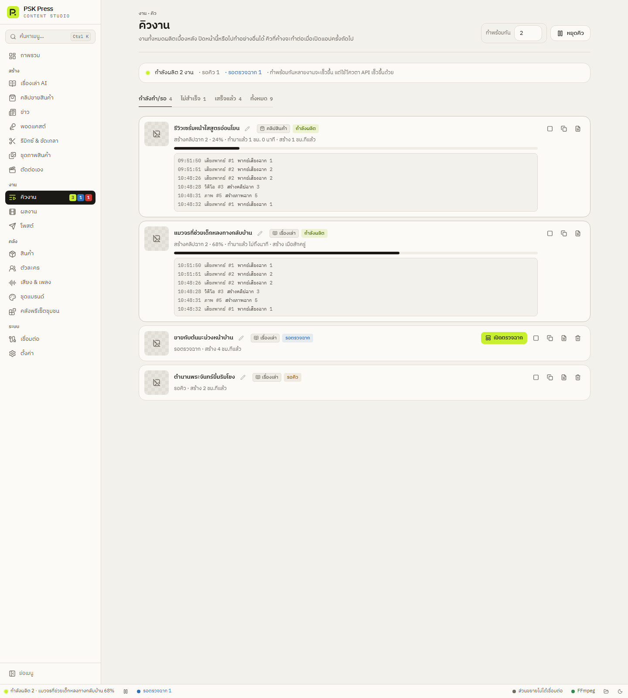

งาน
คิวงานและบันทึก
งานทั้งหมดผลิตเบื้องหลัง ดูความคืบหน้า ยกเลิก ลองใหม่ สร้างซ้ำ และอ่านบันทึกทุกขั้นตอนแบบสดได้ที่นี่


ควบคุมคิว
- ทำพร้อมกัน — 1–4 งาน ค่าเริ่มต้น 1 งาน แนะนำ 1 งานเมื่อใช้ Gemini/Flow ผ่านเว็บ เพราะแต่ละเว็บทำทีละคำขออยู่แล้ว
- หยุดคิว — หยุดรับงานใหม่ งานที่กำลังทำจะทำต่อจนเสร็จ กด เริ่มคิว เพื่อเดินต่อ
แถบสถานะด้านบนบอก “กำลังผลิต N งาน · รอคิว N · รอตรวจฉาก N” งานที่ค้างอยู่จะทำต่อเมื่อเปิดแอปครั้งถัดไป (ปิดได้ที่ ตั้งค่า → คิวและการโพสต์ → ทำคิวที่ค้างต่อเมื่อเปิดแอป)
แท็บและสถานะ
แท็บ: กำลังทำ/รอ, ไม่สำเร็จ, เสร็จแล้ว, ทั้งหมด
| สถานะ | ความหมาย |
|---|---|
| รอคิว | ยังไม่เริ่ม รอให้งานก่อนหน้าเสร็จ |
| กำลังผลิต | กำลังทำ มีข้อความบอกขั้นตอนและ % |
| รอตรวจฉาก | หยุดรอคุณตรวจ storyboard |
| เสร็จ | ได้วิดีโอแล้ว ดูที่ผลงาน |
| ล้มเหลว | ทำไม่สำเร็จ มีเหตุผลและทางแก้ |
| ยกเลิก | คุณยกเลิกเอง |
ปุ่มของแต่ละงาน
- ไอคอนดินสอ เปลี่ยนชื่อ — Enter บันทึก, Esc ยกเลิก
- เปิดตรวจฉาก — งานที่รอตรวจ
- ยกเลิก — งานที่กำลังทำหรือรอตรวจจะถามก่อน ส่วนที่ทำเสร็จแล้วเก็บไว้ กดลองใหม่ภายหลังได้ แอปหยุดงานใน Chrome ด้วย
- ลองใหม่ — งานที่ล้มเหลวหรือยกเลิก ใส่กลับเข้าคิว งานที่ใช้ตรวจฉากหรือคลิป AI จะใช้บท ภาพ และคลิปที่ทำไว้แล้วต่อ ไม่เสียเครดิตซ้ำ
- สร้างซ้ำอีกชุด — สร้างงานใหม่ด้วยค่าเดิม
- ดูบันทึก — เปิดบันทึกการทำงาน
- ย้ายไปถังขยะ — กด เลิกทำ ในข้อความที่เด้งขึ้นได้ แท็บไม่สำเร็จมีปุ่ม ล้างทั้งหมด
งานที่ล้มเหลวจะแสดงเหตุผลเป็นภาษาไทย ถ้ายาวกด อ่านทั้งหมด และมีลิงก์ไปหน้าที่แก้ได้ เช่น ไปหน้าเชื่อมต่อ หรือ ไปที่ตั้งค่า ดูความหมายของข้อความที่พบบ่อยได้ที่ แก้ปัญหา · กด คัดลอกข้อมูลแจ้งปัญหา เพื่อส่งให้ผู้พัฒนา (แจ้งปัญหา)
แต่ละงานบอก ใช้ไป ~฿… ตามที่ใช้บริการ AI จริง (หรือ “ใช้เครดิตบัญชี” เมื่อใช้ผ่านเว็บ/Flow) และงานที่สร้างด้วย ลอง 1 ฉากก่อน มีป้าย ทดลอง 1 ฉาก
บันทึกการทำงาน
ทุกงานมีบันทึกละเอียดทุกขั้นตอน อ่านได้สดระหว่างทำ:
- คำสั่งที่ส่งให้ AI และคำตอบที่ได้
- การทำภาพและคลิปแต่ละฉาก
- สิ่งที่ส่วนขยายทำใน Chrome
- คำสั่ง FFmpeg
- การแก้ของคุณใน storyboard
- ค้นหา — ข้อความ prompt หรือ error
- กรองฉาก — ทุกฉาก / ทั้งงาน / ฉาก N
- กรองระดับ และ ขั้นตอน — ระบบ, วางบท, storyboard, เสียงพากย์, ภาพ, วิดีโอ, ถอดเสียง, เรนเดอร์, โพสต์
- เวลาต่อขั้นตอน — แถบแสดงว่าแต่ละขั้นใช้เวลาเท่าไร
- เลื่อนตามอัตโนมัติ — ขณะงานกำลังทำ (มีป้าย “กำลังบันทึกสด”)
- คัดลอกทั้งหมด / ส่งออก — เป็นไฟล์ .txt หรือ .jsonl ส่งให้ผู้ช่วยดูเมื่อต้องการความช่วยเหลือ
ไฟล์บันทึกยังอยู่ในโฟลเดอร์ของงานเป็น log.jsonl
ถ้ามีงานกำลังทำอยู่ตอนกดปิดแอป แอปจะถามก่อน (“กำลังทำอยู่ N งาน — ปิดแอปเลยไหม?”) ถ้าปิด งานจะเริ่มขั้นตอนนั้นใหม่เมื่อเปิดแอปครั้งถัดไป